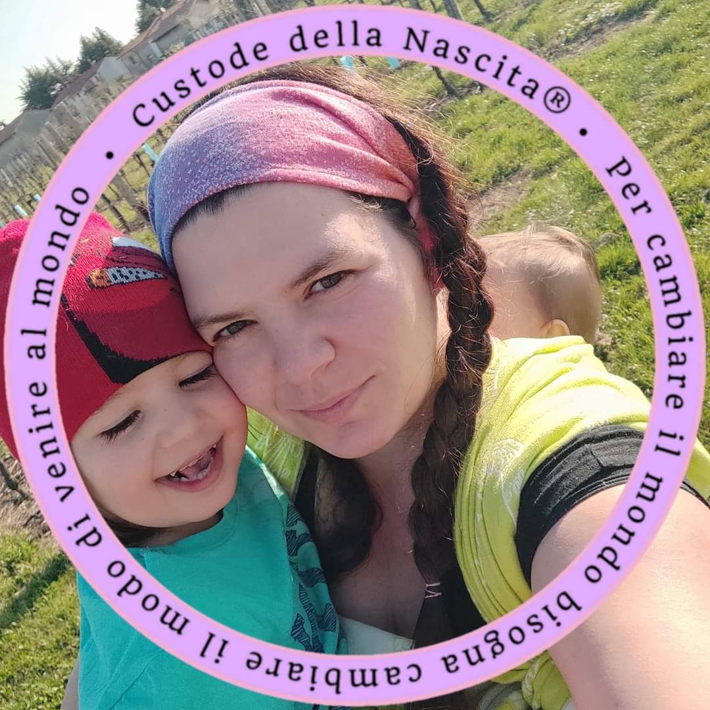

Mi chiamo Gaia e vi voglio raccontare come sono diventata un' Operatrice Materno Infantile. Di come sono arrivata oggi ad accompagnare famiglie dalla gravidanza ai primi anni di vita con uno sguardo che unisce ascolto, presenza e cura.
Perché ogni nascita merita di essere custodita.
E ogni famiglia merita di sentirsi accompagnata.

La Doula che è in me nasce nel febbraio del 2018, nella sala parto di un ospedale di provincia. È lì che, insieme alla nascita del mio primo figlio, Francesco, nasce anche qualcosa di nuovo dentro di me. Le difficoltà incontrate durante la gravidanza, il parto e il post parto mi fanno comprendere quanto sia prezioso sentirsi ascoltate, accolte e sostenute. E quanto, a volte, quel sostegno possa mancare. Da quel momento ho scelto di formarmi per offrire alle altre famiglie quel supporto che io stessa avrei desiderato ricevere.

Nel 2019 divento Peer Supporter per l’Allattamento Materno con l’associazione Custodi del Femminino®, iniziando il mio percorso di accompagnamento nel mondo materno infantile. Poco dopo intraprendo il cammino come Custode della Nascita®, percorso che si intreccia profondamente con la mia vita personale: mi attesto nell’estate del 2020, pochi giorni dopo la nascita della mia secondogenita, Alba Elena, arrivata in una luminosa domenica di sole, nel salotto di casa nostra.

Negli anni continuo a formarmi e ad ampliare le mie competenze diventando Trainer Olistica Materno Infantile®, Custode del Portare Junior®, Operatrice di Massaggio Infantile Sweet Touch, approfondendo il sostegno all’allattamento, al babywearing, al sonno infantile e alla relazione tra genitori e bambini. Il mio percorso prosegue poi con la formazione come Consulente MaBS – Milk and Babywearing Supporter con La Dea Lattea, con il secondo livello come Peer Supporter in Allattamento Materno, e come Consulente del Sonno Infantile e Familiare con metodologia Mamme Con-Tatto®.

Da qualche anno collaboro con La Dea Lattea A.P.S. di cui sono onorata di essere la presidente. L'associazione ha la missione di portare supporto e consapevolezza ad ogni donna e ad ogni famiglia.